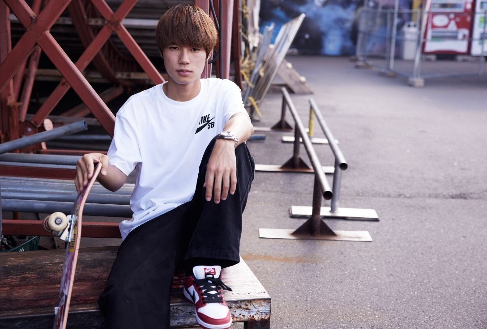

Yuto Horigome

-
Yuto Horigome (born 7 January 1999) is a Japanese professional
skateboarder.
-
He won the gold medal in the inaugural Olympic men's street event at
the 2020 Summer Olympics, becoming the first person ever to win a gold
medal in skateboarding at the Olympics.
-
Horigome was born in Tokyo, Japan, and has two younger brothers. He
began skating at Tokyo's Amazing Square Murasaki Skatepark when he was
seven years old. He learned to skate from his father, who is a former
Vert skateboarder.
-
At age 14, Horigome began traveling to the United States for skating
trips and eventually moved to Los Angeles, California, where he
currently resides.
-
He has competed in numerous American skateboarding pro tours, such as
the Tampa Am and Dew Tour, as well as participating in filming parts.
Horigome was sponsored by a Japanese board company early on. In 2015,
he entered the Wild In The Parks skate contest in Los Angeles, hosted
by Volcom and The Berrics, where he finished 2nd.
-
While in Los Angeles, he filmed some skating parts alongside Canadian
skateboarder Micky Papa, who was sponsored by Blind
Skateboards.Horigome joined the Blind Skateboards team later that year
and stayed with the team until January 2019. In May 2019, Horigome
joined April Skateboards, owned by pro skater Shane O'Neill, who
turned Horigome pro.
-
Horigome ranked second in men's street on the World Skate (WS) World
Skateboarding Olympic Rankings in June 2019, with 62,480 points. At
that time, American Nyjah Huston topped the men's street rankings with
67,080 points.
-
As the 2020 Olympic Games were postponed for a year and the number of
skateboarding events in 2020 was significantly reduced due to the
COVID-19 pandemic, the WS Olympic Rankings for June 2021 included
points earned from events in the 1 January 30 September 2019 season
and the 1 October 2019 30 June 2021 season.
-
In the June 2021 men's rankings, Horigome remained in second place,
with 249,200 points, behind Huston's 269,900 points.
More information about
Yuto Horigome